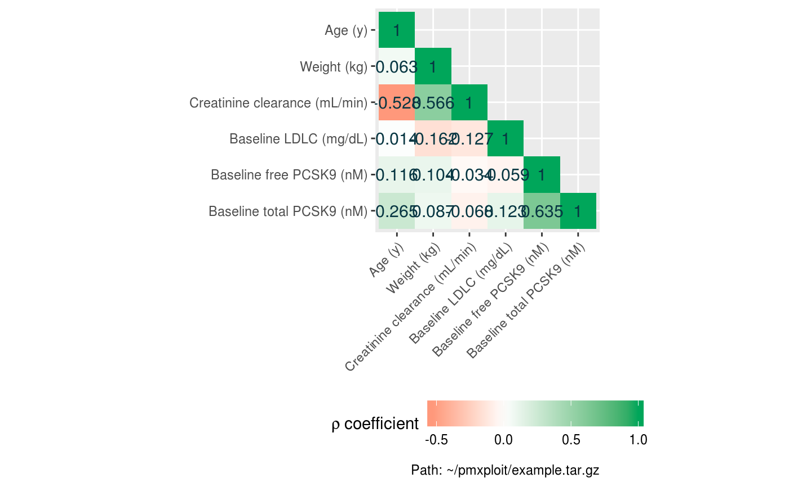
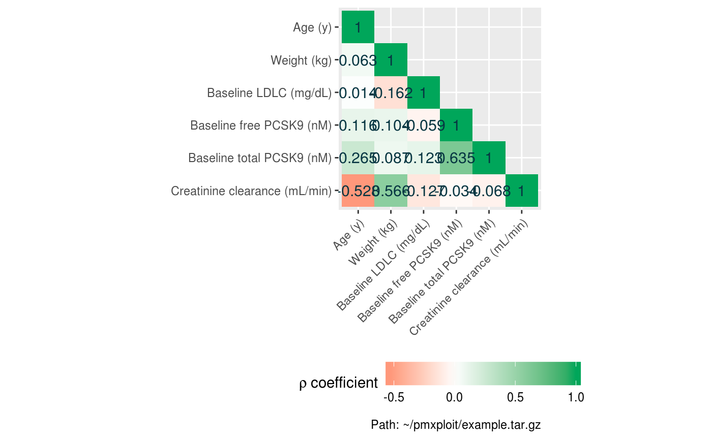
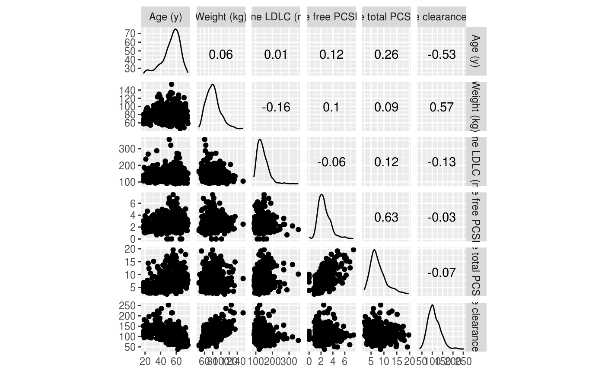

plot_covariates_correlations.RdPlots the selected continuous covariates correlations.
plot_covariates_correlations(run, covariates = NULL, baseline_only = TRUE, correlation_method = NULL, auto_order = TRUE, smoothing_method = NULL, smoothing_se = TRUE, type = "heatmap", fixed_ratio = TRUE, auto_legend = TRUE)
| run |
|
|---|---|
| covariates | character vector of continous covariates names. Default is
|
| baseline_only | logical. Consider only the baseline (= first) values of the subjects. Default is
|
| correlation_method | a character string indicating which correlation
coefficient (or covariance) is to be computed. One of |
| auto_order | logical. If |
| smoothing_method | character. If |
| smoothing_se | logical. Display confidence interval around smooth? |
| type | character. Type of plot. One of |
| fixed_ratio | logical. If |
| auto_legend | logical. When |
| split_by | character. If |
A a ggplot2 object.
cov <- c("AGE", "WT", "BSLDLC", "FBSPCSK", "TBSPCSK", "CLCR") EXAMPLERUN %>% plot_covariates_correlations(covariates = cov, type = "heatmap")+ ggplot2::theme(axis.text.x = ggplot2::element_text(angle = 45, hjust = 1), legend.position = "bottom")EXAMPLERUN %>% plot_covariates_correlations(covariates = cov, type = "heatmap", auto_order = FALSE)+ ggplot2::theme(axis.text.x = ggplot2::element_text(angle = 45, hjust = 1), legend.position = "bottom")EXAMPLERUN %>% plot_covariates_correlations(covariates = c("AGE", "CLCR"), type = "scatterplot", smoothing_method = "lm")#> Error: `data` must be a data frame, or other object coercible by `fortify()`, not a logical vectorEXAMPLERUN %>% plot_covariates_correlations(covariates = cov, type = "scatterplot")EXAMPLERUN %>% plot_covariates_correlations(covariates = cov, type = "scatterplot", smoothing_method = "lm")#> Error: `data` must be a data frame, or other object coercible by `fortify()`, not a logical vectorEXAMPLERUN %>% plot_covariates_correlations(covariates = cov, type = "scatterplot", smoothing_method = "loess")#> Error: `data` must be a data frame, or other object coercible by `fortify()`, not a logical vectorEXAMPLERUN %>% group_by(STUD) %>% plot_covariates_correlations(covariates = cov, type = "scatterplot")#> Warning: Factor variables are omitted in plot